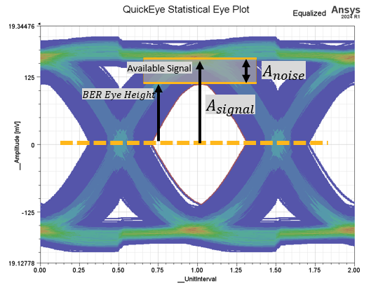
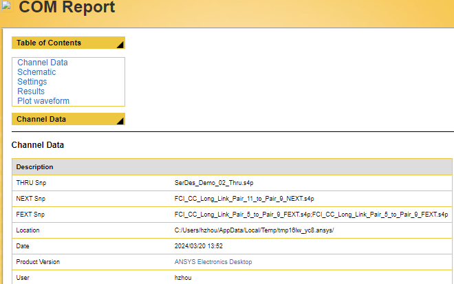

Download this example
Download this example as a Jupyter Notebook or as a Python script.
Channel Operating Margin (COM)#
This example shows how to use PyAEDT for COM analysis. These standards are supported:
50GAUI_1_C2C
100GAUI_2_C2C
200GAUI_4
400GAUI_8
100GBASE_KR4
100GBASE_KP4

What is COM?#
COM was developed as part of IEEE 802.3bj, 100GBASE Ethernet.
COM is a figure of merit for an S-parameter representing a high-speed SerDes channel.
COM is the ratio between eye height and noise.
COM = 20 * log10 (A_signal / A_noise)
Keywords: COM, signal integrity, virtual compliance.
Perform imports#
Perform required imports.
[1]:
import os
import tempfile
[2]:
from ansys.aedt.core.visualization.post.spisim import SpiSim
from ansys.aedt.core.visualization.post.spisim_com_configuration_files import (
com_parameters,
)
from pyedb.misc.downloads import download_file
Create temporary directory and download example files#
Create a temporary directory where downloaded data or dumped data can be stored. If you’d like to retrieve the project data for subsequent use, the temporary folder name is given by temp_folder.name.
[3]:
temp_folder = tempfile.TemporaryDirectory(suffix=".ansys")
thru = download_file(
directory="com_analysis",
filename="SerDes_Demo_02_Thru.s4p",
destination=temp_folder.name,
)
fext_2_9 = download_file(
directory="com_analysis",
filename="FCI_CC_Long_Link_Pair_2_to_Pair_9_FEXT.s4p",
destination=temp_folder.name,
)
fext_5_9 = download_file(
directory="com_analysis",
filename="FCI_CC_Long_Link_Pair_5_to_Pair_9_FEXT.s4p",
destination=temp_folder.name,
)
next_11_9 = download_file(
directory="com_analysis",
filename="FCI_CC_Long_Link_Pair_11_to_Pair_9_NEXT.s4p",
destination=temp_folder.name,
)
Run COM analysis#
PyAEDT calls SPISim for COM analysis. For supported standardes, see the PyAEDT documentation.
Set port_order="EvenOdd" when the S-parameter has this port order:
1 - 2
3 - 4
Set port_order="Incremental" when the S-parameter has this port order:
1 - 3
2 - 4
[4]:
spi_sim = SpiSim(thru)
com_results = spi_sim.compute_com(
standard=1, # 50GAUI-1-C2C
port_order="EvenOdd",
fext_s4p=[fext_5_9, fext_5_9],
next_s4p=next_11_9,
)
PyAEDT INFO: Execute : C:\Program Files\ANSYS Inc\v252\AnsysEM\spisim\SPISim\modules\ext\SPISimJNI_WIN64.exe COM -v CFGFILE=com_parameters.cfg
Print COM values#
There are two COM values reported by the definition of the standard:
Case 0: COM value in dB when big package is used.
Case 1: COM value in dB when small package is used.
[5]:
print(*com_results)
-0.2652 -1.0462
View COM report#
A complete COM report is generated in the temporary folder in HTML format.
[6]:
print(temp_folder.name)
C:\Users\ansys\AppData\Local\Temp\tmp6ldbjncu.ansys

Run COM analysis on custom configuration file#
Export template configuration file in JSON format#
[7]:
custom_json = os.path.join(temp_folder.name, "custom.json")
spi_sim.export_com_configure_file(custom_json, standard=1)
Modify the custom JSON file as needed.
Import configuration file and run#
[8]:
com_results = spi_sim.compute_com(
standard=0, # Custom
config_file=custom_json,
port_order="EvenOdd",
fext_s4p=[fext_5_9, fext_5_9],
next_s4p=next_11_9,
)
print(*com_results)
PyAEDT INFO: Execute : C:\Program Files\ANSYS Inc\v252\AnsysEM\spisim\SPISim\modules\ext\SPISimJNI_WIN64.exe COM -v CFGFILE=com_parameters.cfg
-0.2652 -1.0462
Export SPISim supported configuration file#
You can use the exported configuration file in the SPISim GUI.
[9]:
com_param = com_parameters.COMParametersVer3p4()
com_param.load(custom_json)
custom_cfg = os.path.join(temp_folder.name, "custom.cfg")
com_param.export_spisim_cfg(custom_cfg)
[9]:
True
PyAEDT also supports the SPISim configuration file.
[10]:
com_results = spi_sim.compute_com(standard=0, config_file=custom_cfg, port_order="EvenOdd") # Custom
print(*com_results)
PyAEDT INFO: Execute : C:\Program Files\ANSYS Inc\v252\AnsysEM\spisim\SPISim\modules\ext\SPISimJNI_WIN64.exe COM -v CFGFILE=com_parameters.cfg
-0.155 -0.9455
Download this example
Download this example as a Jupyter Notebook or as a Python script.